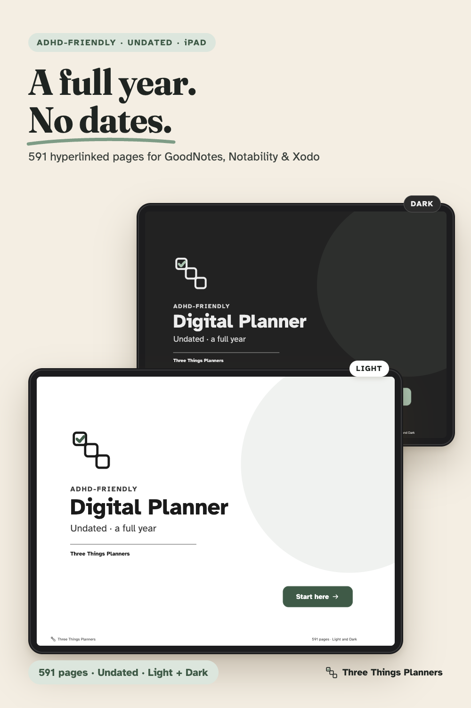
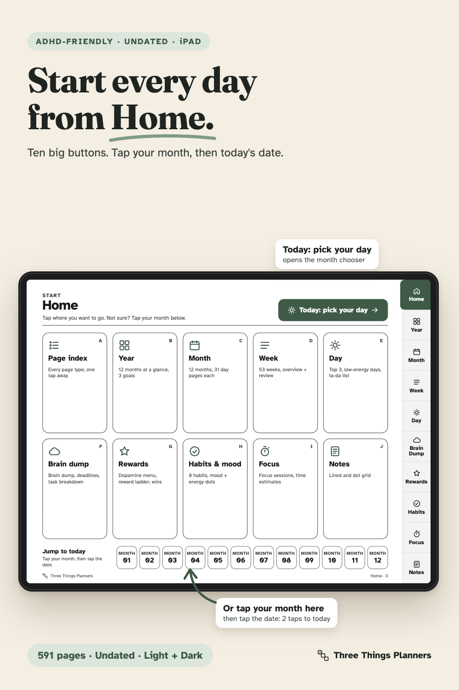
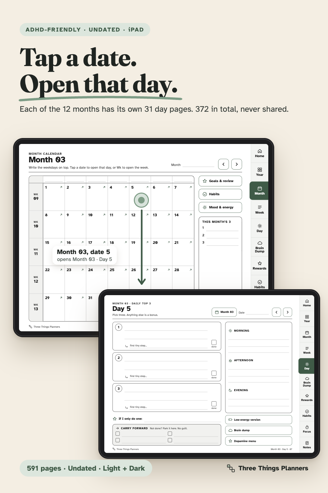
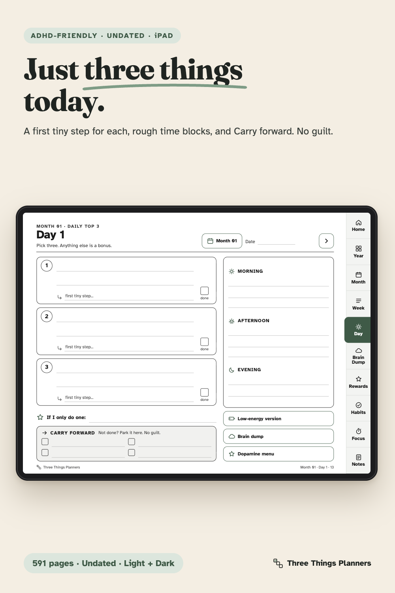
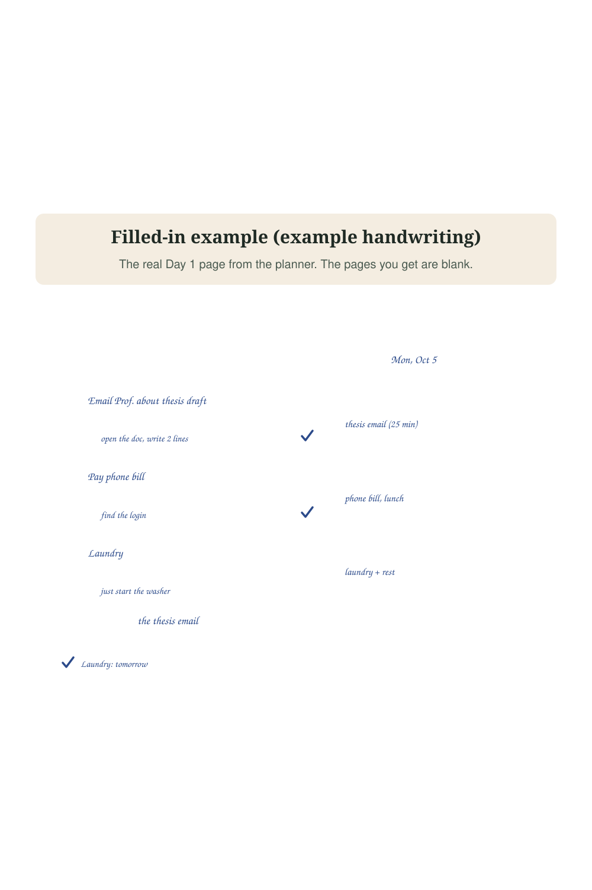
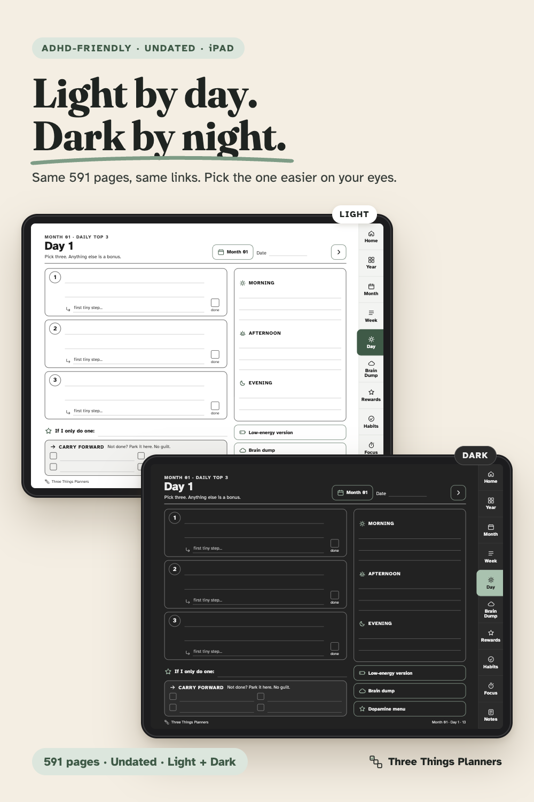
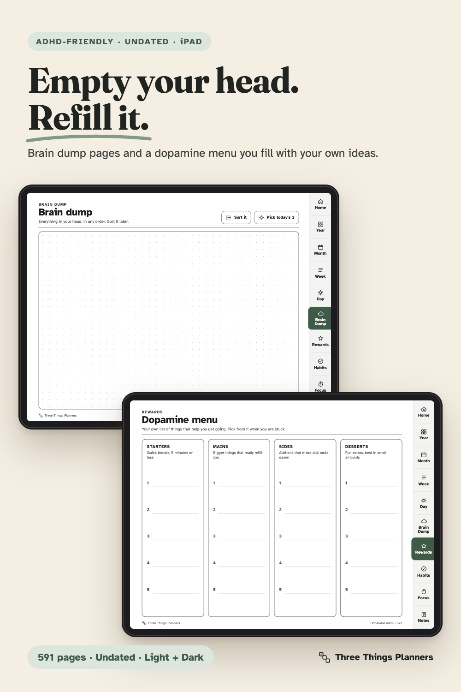
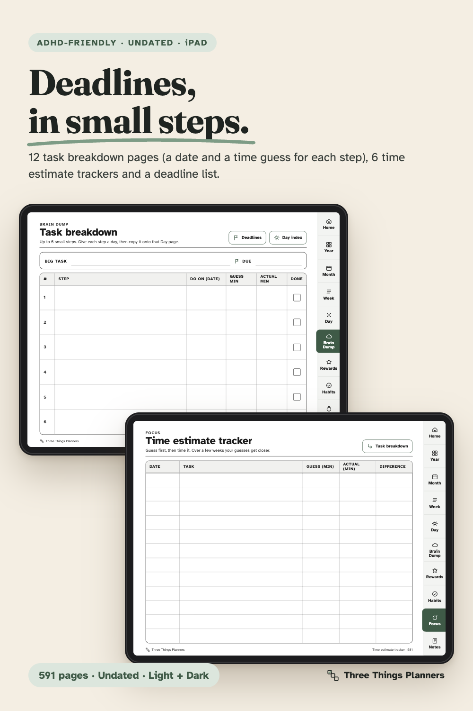
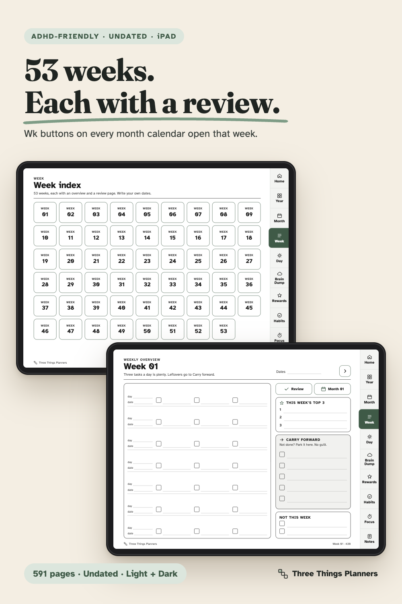
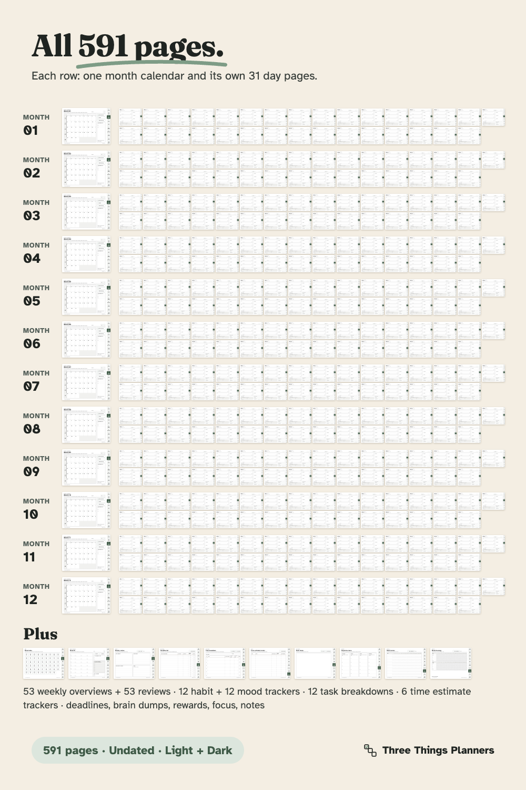

Full-year hyperlinked iPad planner for GoodNotes, Notability and Xodo.
591 undated, hyperlinked pages for a full year: 12 months, each with its own 31 Daily Top 3 pages. Tap a date, plan just three things.
From Three Things Planners, the planner imprint of Hustle Studio.

$12 $9.00 USD launch price (first 30 days), then $12. One-time payment, instant download. No subscription.
Secure checkout. Payment and sales tax are handled by Waffo Pancake, our merchant of record. We never see your card details.
14-day refund, no questions asked. Email chenphien@gmail.com within 14 days of purchase and we'll refund you in full, for any reason (see Terms).
Links guarantee. If the links don't work in your app, you get a full refund. Tell us your app and device and we'll also try to help you get them working.
The page images below are taken from the real planner files. The filled-in example puts example handwriting on top of the real Day 1 page; the pages you get are blank. There are no buyer photos or reviews yet because the shop is new, and we won't invent any. The screen recording below shows the real links working.










A screen recording of the real planner pages and their links.
Big digital planners often have hundreds of pages and thousands of stickers. Finding today's page takes longer than planning today. After two weeks, the app stays closed.
This planner is built the other way around. Open it, tap Start here. On the Home page, tap the month you are in, then tap today's date. Write three things. That is the whole daily habit. (The Today: pick your day button on Home opens the same month chooser, so today is always two taps away.)
A full year, undated. There are 12 month calendars (Month 01 to 12). Every month has its own set of 31 Daily Top 3 pages, so Month 01 · Day 5 and Month 02 · Day 5 are different pages. 372 day pages in all. Write your own month names and dates; in a 30-day month, just skip Day 31. Previous / next buttons on day pages run straight through the year (Month 01 · Day 31 leads to Month 02 · Day 1).
How the links work. Every page except the cover has the same 10 tabs on the right. Each month calendar links every date to that month's own day page, its five Wk buttons to the matching weekly pages, and three buttons to that month's Goals & review, Habit tracker and Mood & energy pages. Weekly overviews (Week 01 to 53) have previous / next buttons, a Review button and a button back to their month. A Month index, a Week index, a Habits & mood index and a page index (grouped A to J) make every section one tap away. Tap targets are at least 44 px, about a fingertip.
What a day looks like. The Daily Top 3 page has three task boxes, each with a first tiny step and a done box, an "If I only do one" line, Morning / Afternoon / Evening blocks, and a Carry forward box ("Not done? Park it here. No guilt."). For heavy days there are Low-Energy Day pages. Hourly pages are included and clearly marked optional. Ta-da lists collect what you already did.
For deadlines. Write every due date on a Deadline list. Give each big one a Task breakdown page: up to 6 small steps, each with a "do on" date, guessed minutes and actual minutes. Then compare guesses and reality on the Time estimate trackers.
Format. Landscape 4:3 pages (768 × 576 pt), the shape of an iPad screen. Works in GoodNotes, Notability and Xodo, and other PDF apps that support internal links. Note: links may not work in GoodNotes for Windows. The planner is made for screens; if you prefer paper, our separate Printable Planner Pack has the same core pages in US Letter and A4.
Nothing is pre-filled. You write your own month names, habits, rewards and menu items. Light gray hints appear only where a nudge helps.
One ZIP download, ADHD-Undated-Digital-Planner_ThreeThingsPlanners.zip, with 3 PDF files. On your download page after payment, the 3 PDFs are also listed for direct download, one by one.
ADHD-Undated-Digital-Planner_Light.pdf 591 pages, light theme, 9,194 internal links ADHD-Undated-Digital-Planner_Dark.pdf 591 pages, dark theme, same pages and same 9,194 links Quick-Start-Guide.pdf 4 pages
Total: 591 pages. Phone wallpapers and a dated calendar are not part of this planner.
Is this a physical product?
No. It is an instant digital download: one ZIP with three PDFs.
Does it really last a whole year?
Yes. Each of the 12 months has its own calendar and its own 31 day pages, and there are 53 weekly overviews with 53 review pages. You never have to erase or copy a day page to keep going.
Which apps does it work in?
GoodNotes, Notability and Xodo on iPad, and other PDF apps that support internal links. Links may not work in GoodNotes for Windows. If the links don't work in your app, you get a full refund.
What does the Today button do?
It opens "Today: pick your day": tap your month, then tap the date on that month's calendar. You can also tap your month straight from the row of month buttons on the Home page. Either way, today is two taps from Home.
A tap draws a line instead of jumping. What now?
In GoodNotes, switch to read-only mode or tap with your finger while drawing with the Apple Pencil only is on. In Notability, tap with your finger. The Quick Start Guide shows the steps.
Who is Three Things Planners? What happens if something goes wrong?
Three Things Planners is the planner imprint of Hustle Studio, a small new shop with its own website (not Etsy). There are no reviews or buyer photos yet, and we won't invent any. That's why there are real page images, a screen recording of the links, a 14-day full refund and a links guarantee. Email chenphien@gmail.com; we reply within 2 business days, and fixes go out as a new download.
Will my download link keep working?
After payment you land on a download page with every file. Save the ZIP to your own device or cloud drive. If you ever lose it, email us with your order email and we'll send the files again.
What if it doesn't work for me?
Email chenphien@gmail.com within 14 days of purchase and we'll refund you in full, no questions asked. Refunds go through Waffo Pancake to your original payment method.
This planner is an organizing tool. It is ADHD-friendly by design, and it is not medical advice.
$12 $9.00 USD launch price (first 30 days), then $12. One-time payment, instant download.
Secure checkout by Waffo Pancake (merchant of record, handles payment and tax). 14-day no-questions refund, and a full refund if the links don't work in your app.